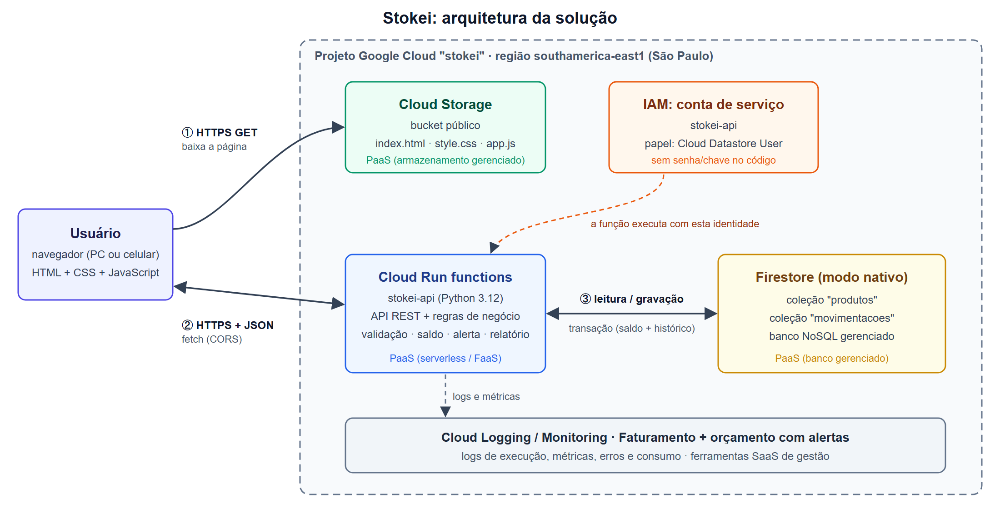
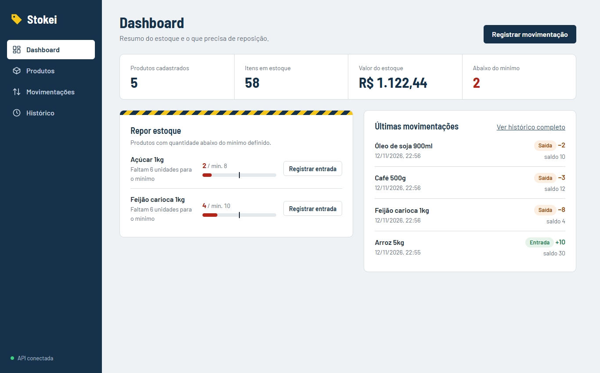
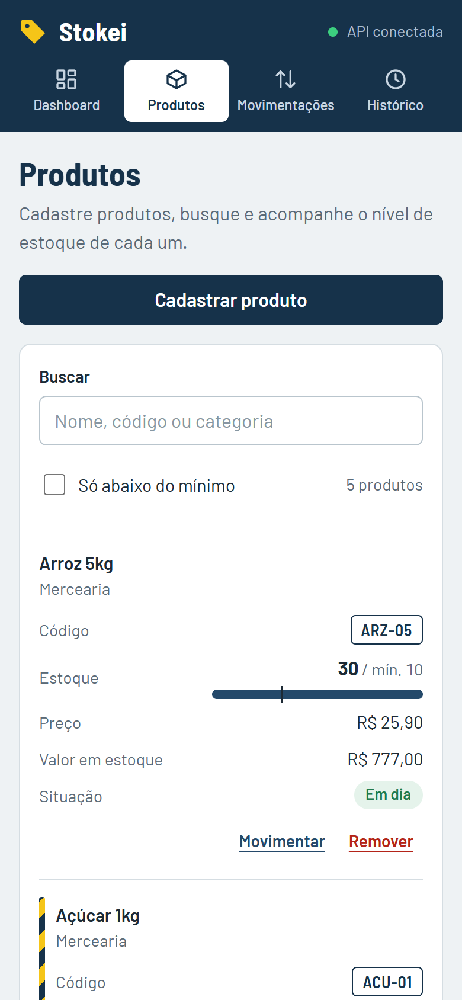

| Integrantes: | Nome 1 (matrícula) · Nome 2 · Nome 3 · Nome 4 · Nome 5 |
| Professor(a): | nome do professor |
| Data: | dd/mm/aaaa |
| Repositório: | link do GitHub |
Pequenos negócios (mercadinhos, lojas, cantinas) costumam controlar o estoque em caderno ou planilha. Entradas e saídas deixam de ser anotadas e o saldo registrado não bate com o real. O dono só descobre a falta de um produto quando o cliente pede e não sabe quanto dinheiro está parado em mercadoria. Além disso, a planilha fica num único computador: se ele quebrar, os dados se perdem, e não é possível consultar o estoque fora da loja.
Objetivo: oferecer um sistema web, hospedado na nuvem, que centralize o cadastro de produtos e as movimentações e seja acessível de qualquer dispositivo. O sistema deve garantir que o saldo nunca fique inconsistente, avisar automaticamente sobre produtos abaixo do estoque mínimo e gerar um resumo do estoque sem cálculo manual.
Por que nuvem: acesso de qualquer lugar, dados que não dependem de um computador local, custo proporcional ao uso (quase zero para um negócio pequeno) e nenhuma manutenção de servidor.
| Funcionalidade | Descrição |
|---|---|
| F1. Cadastro de produtos | Código (único), nome, categoria, quantidade inicial, estoque mínimo e preço unitário, com validação no servidor. |
| F2. Busca | Filtro por nome, código ou categoria, sem diferenciar maiúsculas de minúsculas. |
| F3. Entradas e saídas | Registro de movimentações. Saída maior que o saldo é recusada. |
| F4. Alerta de estoque baixo | Produto abaixo do mínimo recebe o selo "Abaixo do mínimo" e aparece na lista "Repor estoque" do Dashboard. |
| F5. Dashboard | Total de produtos, itens em estoque, valor do estoque e quantidade de itens críticos. |
| F6. Histórico | Últimas movimentações com data, tipo, quantidade e saldo após a operação. |

O navegador baixa a interface (quatro páginas HTML, um CSS e os scripts JS) de um bucket público do Cloud Storage (①). A interface chama a API, publicada no Cloud Run functions, por HTTPS com JSON (②). A função valida os dados, aplica as regras de negócio e lê e grava no Firestore (③). A atualização do saldo e o registro no histórico acontecem numa mesma transação: ou as duas operações são gravadas, ou nenhuma é. A função roda com uma conta de serviço que só tem permissão no Firestore. Logs, métricas e consumo ficam no Cloud Logging/Monitoring e no Faturamento. O navegador nunca acessa o banco diretamente.
A API expõe seis rotas: GET/POST /produtos, DELETE /produtos/{id}, POST /movimentacao, GET /movimentacoes e GET /relatorio. Erros retornam {"erro": "..."} com status 400 (entrada inválida) ou 404 (produto inexistente).
Restrição encontrada: o enunciado pede o Microsoft Azure. A assinatura acadêmica da instituição é restrita aos estudantes de Medicina, e o cadastro de uma conta própria exigiu o CCM (inscrição municipal de empresa), que os integrantes não possuem. A AWS, autorizada verbalmente pelo professor como alternativa, também não permitiu criar a conta. Por isso a solução usa o Google Cloud, que oferece os mesmos tipos de serviço. A tabela indica o equivalente no Azure de cada serviço.
| Serviço | Uso e justificativa | Modelo | Equivalente Azure |
|---|---|---|---|
| Projeto Google Cloud | Agrupa recursos, permissões e faturamento, e permite excluir tudo de uma vez ao final (R1). | — | Resource Group |
| Firestore | Armazena produtos e histórico (R2). É um banco NoSQL gerenciado, com cota gratuita diária e transações que garantem saldo correto mesmo com operações simultâneas. O Cloud SQL foi descartado por não ter cota gratuita. | PaaS | Table Storage / Cosmos DB |
| Cloud Run functions | API e regras de negócio (R3). Serverless: só executa (e só cobra) quando recebe requisições e escala automaticamente. Uma máquina virtual (IaaS) foi descartada porque ficaria ligada 24h e exigiria manter o sistema operacional. | PaaS (FaaS) | Azure Functions |
| Cloud Storage | Hospeda os arquivos do site, sem servidor web e com custo praticamente zero. | PaaS | Blob Storage |
| IAM, Logging, Faturamento | Conta de serviço com permissão mínima, logs e métricas da função e orçamento com alertas (R6). | SaaS (gestão) | Entra ID, Monitor, Cost Mgmt. |
Modelos de serviço: o modelo predominante é o PaaS. O grupo entrega apenas código, dados e arquivos, e servidor, sistema operacional, runtime e escala ficam com o provedor. Não foi usado IaaS, que exigiria uma máquina virtual administrada pelo grupo. Do ponto de vista do dono do negócio, o próprio Stokei é um SaaS: ele usa o sistema pelo navegador, sem instalar nada.
google-cloud-firestore.scripts/testar-api.sh).scripts/deploy.sh).estoque.py) ficam separadas das rotas (main.py) e do acesso ao banco (repositório Firestore). Isso permitiu testar toda a lógica sem depender da nuvem.

| Teste exigido | Como foi verificado | Resultado |
|---|---|---|
| 1. Acesso pela internet | GET /produtos e abertura da URL pública do site | HTTP 200 ✔ |
| 2. Inserção e armazenamento | POST /produtos, recuperação pela busca e conferência do documento no console do Firestore | HTTP 201 ✔ |
| 3. Processamento na nuvem | Entrada de 4 unidades num produto com saldo 3 e mínimo 5: o saldo vai a 7 e o alerta é desligado | HTTP 200 ✔ |
| 4. Recuperação dos resultados | GET /relatorio, GET /movimentacoes e a tela do sistema | HTTP 200 ✔ |
| 5. Entrada inválida / falha | Saída de 999 unidades, nome vazio, código repetido, produto inexistente, corpo não-JSON | 400/400/400/404/400 ✔ |
Todos os testes passaram (12 de 12 verificações, incluindo a remoção do produto de teste), assim como os 58 testes automatizados. Os registros completos estão em docs/evidencias/. Após o deploy: substituir os quadros abaixo pelos prints do console e citar a execução do testar-api.sh contra a URL da nuvem.
stokei-api, com o papel mínimo Cloud Datastore User.textContent).O consumo é acompanhado pelas métricas do Cloud Run (requisições, latência, erros) e pelo Faturamento. Há um orçamento de R$ 10 com alertas em 50%, 90% e 100%, e a função é limitada a 2 instâncias para evitar escala inesperada.
| Serviço | Cota gratuita (referência) | Uso no projeto | Custo estimado |
|---|---|---|---|
| Cloud Run functions | 2 milhões de requisições/mês, 180 mil vCPU-s e 360 mil GiB-s | Algumas centenas de requisições | US$ 0 |
| Firestore | 1 GiB armazenado; 50 mil leituras, 20 mil gravações e 20 mil exclusões por dia | Poucos KB; centenas de leituras/dia | US$ 0 |
| Cloud Storage | 5 GB grátis apenas em regiões dos EUA; em São Paulo, cobrança por GB | 11 arquivos, cerca de 55 KB | < US$ 0,01 |
| Cloud Build / Artifact Registry | Minutos de build gratuitos; 0,5 GB de armazenamento de imagens | Alguns builds; 1 imagem | ≈ US$ 0 a 0,10 |
| Cloud Logging | 50 GiB/mês por projeto | Poucos MB | US$ 0 |
Estimativa para o projeto: praticamente US$ 0/mês, coberto pelas cotas gratuitas e pelo crédito do teste gratuito. Para um pequeno negócio real (cerca de 100 produtos e 300 atualizações de tela por dia), cada atualização lê os produtos duas vezes (lista e relatório) mais o histórico, algo em torno de 50 mil leituras por dia, no limite da cota gratuita. O excedente custaria poucos centavos de dólar por dia, o que dá uma ordem de grandeza de até alguns reais por mês. Valores de referência das cotas publicadas pelo Google; os preços variam por região e devem ser conferidos na Calculadora de Preços do Google Cloud.
O Stokei atende aos requisitos do projeto:
O uso de serviços gerenciados (PaaS/serverless) mostrou na prática a principal vantagem da nuvem para um sistema pequeno: o grupo se concentrou no código e nos dados, sem administrar servidor, e o custo acompanha o uso.
Dificuldades: a principal foi obter uma conta de nuvem. A assinatura Azure da instituição atende só a Medicina, o cadastro próprio no Azure exigiu CCM e não foi possível criar conta na AWS. Isso levou à adoção do Google Cloud, com uma arquitetura equivalente à pedida no enunciado. Acrescentar outras dificuldades que o grupo enfrentou.
Possíveis melhorias: